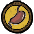
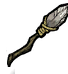
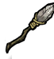
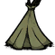
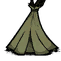
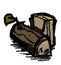
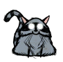
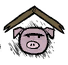
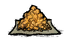
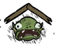

Atualmente há 17 personagens no jogo. A maioria disponível para todos, outros são desbloqueados com a moeda do jogo ou se o usuário possui especificas DLCs de Don’t starve na sua conta da Steam.
Cada personagem possui suas habilidades e tratos especiais tornando-se únicos um do outro. Geralmente são balanceados através de vantagens e desvantagens um exemplo fácil de observar seria a Wigfrid : uma atora que se interpretou um pouco demais à personagem Viking. Ela possui vantagens ofensivas como causar mais dano, capaz de criar lanças aprimoradas() e defensivas como redução de dano e capacetes mais fáceis e baratos de criar(), contudo sua desvantagem é que ela se recusa a comer comida que não seja derivado de carne( ).
).
Alguns personagens possuem habilidades que podem ser vantajosas para iniciantes(Wendy , Walter
, Walter , Wolfgang e Wigfrid possuem certas habilidades que podem facilitar no combate do jogo) outros nem tanto (Warly requerer conhecimento das receitas do jogo, Wes que foi feito especificamente para não ter nenhuma habilidade vantajosa e Maxwell() que possui a menor quantidade de (
, Wolfgang e Wigfrid possuem certas habilidades que podem facilitar no combate do jogo) outros nem tanto (Warly requerer conhecimento das receitas do jogo, Wes que foi feito especificamente para não ter nenhuma habilidade vantajosa e Maxwell() que possui a menor quantidade de ( ) do jogo).
) do jogo).
Wilson() é o primeiro e o personagem "mascote" de Don't Starve. É o personagem principal da historia do jogo, foi um cientista que foi enganado em criar portal para o mundo do Don't Starve. O seu "poder" é ser capaz de crescer uma barba, que produz conforto durante o inverno.
É considerado o personagem para novatos pois não possui desvantagens porém há outros personagens que possuem vantagens muito mais fortes e com desvantagens mínimas ou que podem ser contornadas. Wilson é "dublado" por um trompete harmonizado
Willow() é uma jovem que sofre de piromania, ela carrega o seu confiavel isqueiro() e o seu ursinho de pelúcia() o Bernie! Ela é imune a queimaduras e ao fogo. Bernie() ganha vida() e auxilÍa Willow enquanto ela estiver insana, protegendo e lutando contra os monstros da insanidade por ela. Jogadores não acostumados com a insanidade talvez queiram investir um pouco com a Wilow, já que ela é capaz de ganhar ( ) enquanto próximo de fogo e com a ajuda do Bernie lidar contra a insanidade. Willow é "dublada" por uma flauta.
) enquanto próximo de fogo e com a ajuda do Bernie lidar contra a insanidade. Willow é "dublada" por uma flauta.
Wolfgang() "o másculo" é capaz de dar quantidades absurdas de dano (até o dobro de dano!), mas sofre de um () grande. Wolfgang possui 300 de (). Enquanto ele estiver entre 100~220() ele estará em seu estado normal. Durante essa forma normal Wolfgang não causa dano extra e a sua fome drena 50% mais rapido. Caso a sua () ultrapasse 220, ele aumentará de tamanho e poderá causar entre 1.25x a 2.0x de dano extra dependendo de quanto de fome ele tem. Caso a sua () fique menor que 100 Wolfgang enfraquecerá, causando apenas 0.75x ~ 0.5x o seu dano base. Wolfgang também sofre de Nictofobia e sofre 10% a mais de insanidade pela escuridão. A fome de Wolfgang pode ser um pouco intimidante de controlar, porém a quantidade de dano que ele pode causar certamente vale apena. Wolfgang é "dublado" por uma tuba, que muda de tonalidade dependendo do quão forte ele esta.
Wendy( ) é uma garota depressiva que lamentava a morte de sua irmã todos os dias. Porém ao entrar no mundo de Don't Starve a sua irmã, Abigail, voltou à vida como um fantasma () e agora auxilía Wendy em sua jornada. Wendy é fraca causando apenas 0.75x do seu dano base e inicia o jogo com a flor de sua irmã(). Essa flor é usada para invocar Abigail. Abigail inicialmente começa com 150 de () porém ao decorrer dos dias a sua () pode alcançar a um máximo de 600. O espírito de Abigail ataca em área, causando 15 de dano durante o dia, 25 durante a tarde e 40 durante a noite ou nas cavernas. Quaisquer mobs atacados por Abigail são amaldiçoados (indicado por pétalas envolta deles) recébem 40% a mais de dano por Wendy.
) é uma garota depressiva que lamentava a morte de sua irmã todos os dias. Porém ao entrar no mundo de Don't Starve a sua irmã, Abigail, voltou à vida como um fantasma () e agora auxilía Wendy em sua jornada. Wendy é fraca causando apenas 0.75x do seu dano base e inicia o jogo com a flor de sua irmã(). Essa flor é usada para invocar Abigail. Abigail inicialmente começa com 150 de () porém ao decorrer dos dias a sua () pode alcançar a um máximo de 600. O espírito de Abigail ataca em área, causando 15 de dano durante o dia, 25 durante a tarde e 40 durante a noite ou nas cavernas. Quaisquer mobs atacados por Abigail são amaldiçoados (indicado por pétalas envolta deles) recébem 40% a mais de dano por Wendy.
Ou seja se Wendy atacar junto com Abigail, ela causará 1.15x de dano ao invés de 0.75x de dano. Wendy também é comfortavel com a escuridão e recebe menos penalidades da escuridão. Wendy é uma otima escolha para iniciantes, ela perde menos () ao decorrer do jogo e sua irmã() é perfeita para eliminar, em questão de segundos, dezenas de aranhas e outros animais menores. Produzindo uma quantidade enorme de comida de forma segura. Wendy é "dublada" por uma flauta alto.
WX-78() é um robô autossustentável que odeia todos os seres vivos. WX-78 pode aumentar os seus status base utilizando engrenagens( ), podendo chegar a um limite de (400 200 e 300). Ele é sensivel à água() e perde (0.5) a cada 3 a 5 segundos caso esteja molhado(). WX-78 também não é penalizado por comer comidas além da validade (mas ainda é vulneravel a comidas tóxicas). Caso ele seja atingido por um relâmpago (naturalmente ou através de de uma
), podendo chegar a um limite de (400 200 e 300). Ele é sensivel à água() e perde (0.5) a cada 3 a 5 segundos caso esteja molhado(). WX-78 também não é penalizado por comer comidas além da validade (mas ainda é vulneravel a comidas tóxicas). Caso ele seja atingido por um relâmpago (naturalmente ou através de de uma  ) ele recuperá 100 () e entrará em SOBRECARGA.
) ele recuperá 100 () e entrará em SOBRECARGA.
Enquanto em SOBRECARGA, WX-78 não é afetado pelas mudanças na temperatura, produz uma pequena quantidade de luz e aumenta a sua velocidade em 50%. WX-78 é um personagem bem básico e sua desvantagem é facilmente mitigada usando guarda-chuvas ou outros equipamentos de proteção à chuva .Caso o jogador queira um personagem o mais neutro possível em termos de desvantagems, WX-78 é uma ótima opção. WX-78 é "dublado" por uma "sintetizador em mau funcionamento".
Wickerbottom( ) é uma senhora bibliotecária e escritora capaz de reconhecer a fauna e flora através de seus nomes científicos. Wickerbottom começa o jogo com o conhecimento científico de uma máquina de ciências(
) é uma senhora bibliotecária e escritora capaz de reconhecer a fauna e flora através de seus nomes científicos. Wickerbottom começa o jogo com o conhecimento científico de uma máquina de ciências( ), ou seja ela pode craftar mochilas() e outros equipamentos(
), ou seja ela pode craftar mochilas() e outros equipamentos( ) sem a presença dessa máquina. Consequentemente caso ela crie uma maquina de ciências seria como se ela tivesse criado uma máquina de alquimia(
) sem a presença dessa máquina. Consequentemente caso ela crie uma maquina de ciências seria como se ela tivesse criado uma máquina de alquimia( ). Wickerbottom também pode criar livros. Cada livro ativa um efeito diferente ao ser utilizado, lembrando que ler qualquer livro custa uma quantidade significativa de (. Por exemplo: () faz com que todas as plantas instantaneamente crescam ou () faz que uma tempestade de relâmpagos ocorra no local. Wickerbottom sofre de insônia e não é capaz de dormir() por meios naturais para recuperar status () . Ela também possui um estômago() sensivel, e as penalidades de comidas além do prazo de validade são aumentadas. Wickerbottom e os seus ( são extremamente poderosos e as suas desvantagens são facilmente contornadas. Dormir é uma mecânica situacional para recuperar status basicos() e com o livro () Wickerbottom consegue quantidades absurdas de comida então raramente terá de comer comidas estragadas. Wickerbottom é "dublada"por um oboé.
). Wickerbottom também pode criar livros. Cada livro ativa um efeito diferente ao ser utilizado, lembrando que ler qualquer livro custa uma quantidade significativa de (. Por exemplo: () faz com que todas as plantas instantaneamente crescam ou () faz que uma tempestade de relâmpagos ocorra no local. Wickerbottom sofre de insônia e não é capaz de dormir() por meios naturais para recuperar status () . Ela também possui um estômago() sensivel, e as penalidades de comidas além do prazo de validade são aumentadas. Wickerbottom e os seus ( são extremamente poderosos e as suas desvantagens são facilmente contornadas. Dormir é uma mecânica situacional para recuperar status basicos() e com o livro () Wickerbottom consegue quantidades absurdas de comida então raramente terá de comer comidas estragadas. Wickerbottom é "dublada"por um oboé.
Woodie() é um lenhador canadense que carrega um machado que fala() e 3 estranhas maldições. Woodie por ser um lenhador consegue cortar árvores rapidamente e junto com a sua companheira () conseguem derrubar florestas inteiras em minutos. Quando for lua cheia ou se Woodie comer um de seus totens() ou caso ele coma ( ) ele se transformará em uma de suas maldições:
) ele se transformará em uma de suas maldições:
() É a sua forma de castor. Nessa forma Woodie corta árvores ainda mais rapido.
() É a sua forma de alce. Nessa forma Woodie ganha habilidades ofensivas, seu ataque básico causa 59 de dano e agora Woodie pode fazer uma arrancada causando o mesmo dano para todos os inimigos atingidos. Além de propriedades ofensivas, ele também recebe 90% de redução de dano e é imune a atordoamentos. Essa forma é otima para lidar contra bosses e limpar rapidamente grande grupos de mobs(como a ).
() É a sua forma de ganso. Nessa forma Woodie recebe 40% de velocidade extra e pode andar sobre à água, permitindo encontrar as ilhas lunares sem a necessidade de um barco.
Durante as transformações, Woodie recebe visão noturna e resistência contra os elementos. Entretanto após a transformação, o seu estômago ficará vazio (0 ). Então se o jogador pretende transformar é recomendado não transformar caso esteja com o () cheio e trazer comida adicional. Woodie e as suas maldições permitem que o jogador colete quantidades absurdas de madeira( ) e de comida ( ). A sua maior desvantagem é que durante a lua cheia ele automaticamente se transformará. Entretanto entrar em um caverna não ativará esse evento e o jogador também pode tirar proveito das transformações automáticas para fazer atividades como: colher madeira(), explorar o mapa() e matar aranhas(). Woodie é "dublado" por um violoncelo.
). A sua maior desvantagem é que durante a lua cheia ele automaticamente se transformará. Entretanto entrar em um caverna não ativará esse evento e o jogador também pode tirar proveito das transformações automáticas para fazer atividades como: colher madeira(), explorar o mapa() e matar aranhas(). Woodie é "dublado" por um violoncelo.
Wes() o mímico é um jovem mudo que pratica arte com balões(). Wes é fraco e frágil, tendo uma quantidade de () menor do que a maioria do elenco e causa apenas 0.75x do seu dano base. Os balões de Wes não possuem nenhuma função, custam um pouco de () para enchee-los e causam 1 de dano. Wes é um personagem feito para jogadores que procuram dificultar o jogo, sem oferecer nenhuma vantagem. Wes por ser mudo não é dublado por nenhum instrumento.
Maxwell(), outro personagem importante para a história, ele ja foi o antigo rei do mundo de Don't Starve("The Constant"). Antes da sua chegada no Costant, Maxwell era um mágico amador porém ao encontrar o () as sombras lhe ofereceram sabedoria na magia escura. Durante os seus shows Maxwell era acompanhado de Charlie, a sua assistente. Após uma catástrofe em seu ultimo show, as sombras abduziram Charlie e Maxwell. Transformando Maxwell em seu novo "rei" e Charlie em um monstro da escuridão. Durante o seu "reinado", Maxwell era constantemente assombrado pelas criaturas sombrias que habitam o Costant. Eventualmente Wilson() conseguiu liberta-lo do trono sombrio. Mas ao fazer isso o próprio Wilson ficou preso ao trono até, que depois de um tempo indeterminado, Charlie o removou do trono e se transformou na nova rainha do Constant.
Maxwell se considera "elegante" e recupera () passivamente. Embora o () causou problemas no seu passado, Maxwell continua a carregar ele. O () serve como uma estação de magia negra, quando colocado no chão o jogador pode construir clones ao custo de () e () máxima. Os clones realizam tarefas como cavar, combate e cortar árvores. Entretanto Maxwell é frágil e possui apenas 75() máximo. Caso ele esteja sem armadura, principalmente contra bosses e monstros "elites" Maxwell pode morrer em 1 ou 2 ataques. Maxwell é uma ótima opção para jogadores que preferem coletar em abundância. Entretanto além de ser frágil, Maxwell precisa de () para criar os seus clones e para isso é necessário ficar insano. Jogadores que estejam confortaveis com a insanidade não terão problemas com Maxwell. Ele também é capaz de ler os livros da ( ), podendo salvar um pouco de () dela. Maxwell é "dublado" por um harmônio.
), podendo salvar um pouco de () dela. Maxwell é "dublado" por um harmônio.
Wigfrid é uma atora de teatro que se enraizou com a personagem. Wigfrid possui várias vantagens ofensivas: ela possui o seu próprio arsenal()(), durante o combate ela causa 1.25x o seu dano e recebe apenas 0.80x de dano e absorve a vitalidade de monstros abatidos, recebendo um pouco de ao matar qualquer mob. Por ser uma atora, Wigfrid além de suas vantagens ofensivas ela também pode escrever poemas que ao serem utilizados inspiram aliados e Wigfrid e dependendo do poema é capaz de amendrotar todos os monstros próximos. Entretanto para ler os poemas Wigfrid precisa estar inspirada(),para ficar inspirada o jogador tem que entrar em combate.Como mencionado anteriormente,Wigfrid se recusa a comer vegetais,frutas e mel.Limitando a dieta do jogador oque geralmente causa um pequeno pânico entre os novatos.Porém também é possivel do jogador entrar em uma dieta exclusiva de pois Wigfrid pode recuperar o perdido matando aranhas e outros mobs simples de matar. No geral,Wigfrid é um personagem simples e a sua desvantagem principal é facilmente contornada. Jogadores que queiram se aprofundar em combate mas temem a fome de terão sucesso com Wigfrid. Wigfrid é "dublada" por conjuntos de instrumentos do tipo metais.
Webber é um garoto que foi atacado por uma aranha,e agora os dois compartilham o mesmo corpo.A principal habilidade de Webber é a sua sinergia com e a sua imunidade a toxicidade da .Webber ao pisar em terrenos controlado por aranhas não recebe redução de movimento e também não acordará elas.Ele pode contratar com qualquer pedaço de carne,quando Webber contrata 1 aranha ele automaticamente contrata outras aranhas(2~3) próximas sem custo extra.Aranhas não possuem muito então não fazem uma proteção ideal contra bosses mas conseguem lidar facilmente contra ordas de lobos.
Porém a melhor forma de utilizar aranhas é causando uma pequena "guerra" entre elas.
Em Don't Starve, caso o jogador tenha animais domesticados (que possuem capacidade de lutar) ele pode comandar que o seu animal ataque sem que o jogador se envolva na luta.Para fazer isso o jogador irá ter que atacar o monstro que deseja que o seu pet lute contra,porém durante a animação de bater no monstro o jogador deve rapidamente cancelar essa animação.Para cancelar a animação basta fazer qualquer outra ação como andar.
Então Webber é capaz de utilizar uma única aranha contratada para causar discordia total em um local com vários ninhos de aranha. Quando a aranha contratada atacar "X" aranha,"Y" quantidade de aranhas vão ficar agressivas contra a nossa aranha.Porém "Z" quantidade de aranhas não viram que o nosso amigo foi o que causou essa briga então vão ficar agressivas contra o grupo "Y" de aranhas.E esse cíclo continua até que quase todas as aranhas morram ou percam interesse.
Durante esse processo Webber pode pressionar barra de espaço para colher automaticamente os itens deixado por elas.
Webber, assim como , é capaz de crescer uma barba porém a sua é feita de teia.A desvantagem de Webber é que ele é considerado um personagem monstro.Ou seja certos mobs neutros (  ) automaticamente serão agressivos contra Webber.As habilidades de Webber permitem que ele tenha acesso a infinito, porém outros personagens( ) também conseguem alcançar essa meta sem terem que sacrificar as suas interações com .Webber é um bom personagem para iniciantes que não conseguem lidar contra a fome e frio.Porém como mencionado,outros personagens conseguem fazer o seu papel de "máquina de ".Webber é "dublado" por um sintetizador que "caiu das escadas".
) também conseguem alcançar essa meta sem terem que sacrificar as suas interações com .Webber é um bom personagem para iniciantes que não conseguem lidar contra a fome e frio.Porém como mencionado,outros personagens conseguem fazer o seu papel de "máquina de ".Webber é "dublado" por um sintetizador que "caiu das escadas".
Warly é um cozinheiro que antes de ser abduzido cuidava de sua mãe Angeline que sofria de alzheimer,porém recuperava um pouco de sua memória toda vez que Warly cozinhava.Warly possui a sua própria cozinha portátil,capaz de cozinhar receitas avançadas desde o primeiro dia.Além de sua própia cozinha,Warly pode cozinhar receitas únicas cada uma com efeitos positivos únicos como: imunidade à chuva,luminosidade por um período e dentre outros.Ele também pode temperar receitas para adicionar outros bônus como: minerar e cortar rapidamente(),resistência a dano() e aumento no dano().Receitas temperadas e únicas podem ser consumidas por todos mas somente Warly pode cria-las.
Entretanto Warly possui um apetite refinado e se recusa a comer ingredientes,comendo apenas receitas.Ele também memoriza as suas refeições passadas em até 2 dias (16 minutos) e caso ele repita qualquer refeição nesse prazo,ele receberá penalidades no status ganho ao consumir entre -10% (na primeira vez que repetir) até -70% (na quinta ou mais repetição).Warly também possui um estômago insaciável e sente 20% mais rapido.
Warly assim como e possui um início de jogo fraco e com poucas vantagens,porém ao decorrer do tempo ele consegue oferecer bônus enormes para ele e a sua equipe.Especialmente com ,podendo aumentar a eficiência de suas habilidades de cortar e lutar respectivamente.Também consegue auxiliar Warly em conseguir os temperos necessários rapidamente.Warly requer conhecimento de receitas para conseguir sobreviver e não possui vantagens que se destacam no inicio do jogo.Mas caso o jogador consigua investir tempo com Warly,certamente ele é viável principalmente quando jogando em grupo.Warly é "dublado" por tambores de aço
Wormwood é uma planta reanimada pela energia
de uma gema verde localizada em seu peito.Wormwood é capaz de plantar vegetais através de sementes sem precisar de um terreno para fazendas( ),conseguindo produzir uma abundância de alimentos.Ressaltando que as plantações de Wormwood podem apodrecer caso não sejam colhidas.Wormwood também pode possui acesso a uma seção de crafting "dedo verde" ().Na seção de ,ele pode criar toras amaldiçoadas() utilizado frequentemente em magia
),conseguindo produzir uma abundância de alimentos.Ressaltando que as plantações de Wormwood podem apodrecer caso não sejam colhidas.Wormwood também pode possui acesso a uma seção de crafting "dedo verde" ().Na seção de ,ele pode criar toras amaldiçoadas() utilizado frequentemente em magia ,armadura espinhosa que reflete dano e protege contra plantas espinhosas,armadilhas espinhosas que causam dano em área contra inimigos (é necessário utilizar uma (spikyarmor)para não levar dano dos espinhos) e um fertilizante especial que serve para curar Wormwood.
,armadura espinhosa que reflete dano e protege contra plantas espinhosas,armadilhas espinhosas que causam dano em área contra inimigos (é necessário utilizar uma (spikyarmor)para não levar dano dos espinhos) e um fertilizante especial que serve para curar Wormwood.
Durante a primavera Wormwood começará a florescer(),aumentando a sua velocidade mas aumentando a sua fome durante a estação.Ele também ganha ao plantar.Entretanto Wormwood não recebe (negativo ou positivo) de receitas,então para se curar é necessario: dormir,utilizar fertilizantes ou remédios.Wormwood por ser uma planta,se sensibiliza com a morte de seus amigos.Toda vez que ele presencia ou casa a queimada e desmatação de uma planta,ele perde .Wormwood é um personagem facil e simples de jogar,geralmente é utilizado para jogadores que preferem ficar na base plantando e produzindo enormes quantidades de alimentos.Quando combinado com uma  e um ,ele consegue produzir comida o suficiente para o ano todo em alguns dias.Wormwood é "dublado" por um didjeridu.
e um ,ele consegue produzir comida o suficiente para o ano todo em alguns dias.Wormwood é "dublado" por um didjeridu.
Winona é uma engenheira e irmã de Charlie.Winona cria itens 50% mais rapido mas perde um pouco de para construir rapidamente. Winona tem acesso a uma seção de crafting de engenhocas(). Nessa seção de crafting, ela pode construir várias máquinas() como: catapultas(ótimas contra ordas de lobo), projetores de luz, fita crepe para reparar vestimentas e barcos e geradores de energia para abastecer as suas criações. Winona por conhecer Charlie(a atual rainha do Constant e monstro da escuridão)consegue desviar de um ataque de Charlie. Os desvios de Winona resetam toda vez que ela encontra uma fonte de luz. Winona é um personagem simples porém o gasto de ao craftar itens não é favoravel para iniciantes, mas as suas catapultas são extremamente úteis como fonte de proteção. Winona é "dublada" por tubos de plástico.
Wortox é um diabrete capaz de se teleportar.Wortox utiliza almas para se nutrir, curar e teleportar.Wortox começa com algumas mas consegue obter mais matando mobs.Caso ele tenha almas em seu inventário ele pode clicar com o botão direito em qualquer terreno para se teleportar até o local alvo, consumindo 1 no processo.Wortox pode se curar e também pode curar outros jogadores utilizando ,ao derrubar almas no chão ele ira resturar para até 8 jogadores próximos (incluindo Wortox).Entretanto Wortox recebe apenas 50% dos valores de comidas e receitas, então para se alimentar eficientemente ele deverá consumir almas.Ao comer ele ganha 18 de ).Wortox precisa entrar em constante combate para obter ,porém com habilidades de se curar e teleportar não é dificil de obter novas (almas).O jogador também pode optar por matar animais menores (borboletas,toupeiras e pássaros).Wortox é um tanto "apelão" e facil de jogar,mas não é incomun que o jogador fique insano constantemente enquanto joga de Wortox.Wortox é "dublado" por um violino.
Wurt é uma garota da tribo "homem-peixe" que se sente comfortavel em seu habitat mas é curiosa para desbravar o mundo afora e com grandes planos para a sua tribo.Wurt se sente em casa no pântano e recebe 30% de movimento extra, ela também consegue identificar tentáculos escondidos no subsolo do pântano.Ela consegue contratar  com vegetais, além de oferecerem proteção eles podem minerar e cortar árvores.Wurt também pode criar novas casas para o povo de sua tribo como também pode criar casas fortificadas que spawnam homens-peixes guardas().Adicionalmente ela pode criar um "trono" real, quando completado um homem-peixe aleatório ira ocupar o trono.Enquanto um rei() estiver ocupando o trono, todos os homens-peixes(incluindo Wurt)receberão status extras e causarão mais dano e se tornarão neutros com outros jogadores.Porém é necessário alimentar o para mante-lo vivo para manter os bônus.
Caso o morra,um novo homem-peixe ocupará o trono depois de 1 dia (8 minutos) e se tornará em um novo rei.Wurt, assim como a sua tribo, é vegetariana e se recusa a comer .Porém ela recebe 33% valor nutritivo a mais de qualquer outra fonte de comida.Porcos odeiam a tribo de Wurt e semelhantemente a e são agressivos com ela.Contudo, diferentemente dos 2 outros personagens mencionados, ela se recusa a trocar com o porco rei.Wurt sofre de não possuir muitas vantagens no início do jogo.Mas após a criação de um trono e a expansão de sua tribo ela e os seus guardas conseguem eliminar em segundos quaisquer bosses.Wurt é "dublada" por "gargarejos".
Walter é um garoto escoteiro que ama a natureza, não sente medo de monstros e é acompanhado por uma cachorrinha estranha chamada"Woby".
é um garoto escoteiro que ama a natureza, não sente medo de monstros e é acompanhado por uma cachorrinha estranha chamada"Woby".
Walter começa o jogo com o seu estilingue e a sua amiga Woby.Woby carrega uma mochilinha que permite guardar itens adicionais e ela adora comer .Se Walter der suficiente para Woby, ela aumentará de tamanho. Walter pode montar nela ganhando velocidade extra.Ele também pode atacar enquanto montado com o seu estilingue ou com outras armas, porém se atingido por qualquer ataque Woby entrará em pânico e derrubará Walter.Os estilingues precisam de munição para serem utilizados.
Walter começa com munição de pedra,que causa somente 10 cada.Ele pode desbloquear novas munições enquanto próximo de máquinas de ciências() e alquimia().As munições de ouro () causam 34
de dano,suficiente para matar coelhos e pássaros com 1 tiro.A carne desses animais( ) podem ser oferecidas para o porco rei() que em troca dará ouro(
) podem ser oferecidas para o porco rei() que em troca dará ouro( ) que pode ser utilizado para criar mais munições.Walter não sente medo de monstros e não recebe penalidades por ficar próximo deles e também não tem interesse em vestimentas e não receberá extra delas.Entretanto ao receber dano Walter fica com medo e perde 2x do dano recebido.Essa penalidade pode ser amenizada utilizando o chapeu de escoteiro(
) que pode ser utilizado para criar mais munições.Walter não sente medo de monstros e não recebe penalidades por ficar próximo deles e também não tem interesse em vestimentas e não receberá extra delas.Entretanto ao receber dano Walter fica com medo e perde 2x do dano recebido.Essa penalidade pode ser amenizada utilizando o chapeu de escoteiro( ) que Walter carrega.Além de estilingues,ele também pode criar tendas portáteis() para ele e seus companheiros.Walter é uma ótima opção para iniciantes que preferem um combate mais seguro e evitar perda de sanidade,ele também consegue comida facilmente em qualquer estação através do uso de estilingue contra pássaros e coelhos.Walter é "dublado" por uma corneta desafinada.
) que Walter carrega.Além de estilingues,ele também pode criar tendas portáteis() para ele e seus companheiros.Walter é uma ótima opção para iniciantes que preferem um combate mais seguro e evitar perda de sanidade,ele também consegue comida facilmente em qualquer estação através do uso de estilingue contra pássaros e coelhos.Walter é "dublado" por uma corneta desafinada.